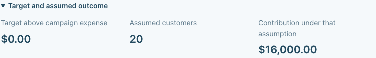
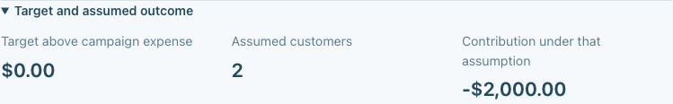

Leah returns to the 140-hour delivery context from her operating comparison. The medium prepaid campaign fits its funding, capacity and timing requirements. Sales is ready to call that permission to proceed.
Finance asks a different question: what if customers do not want to pay before delivery? Leah would still owe the $4,000 campaign expense. The model's operating finding has answered whether the supplied arrangement can be carried out. It has not established that customer response will make the spending worthwhile.
Keep the quote fixed when the customer count changes.
A common shortcut is to describe the planned campaign as “$200 acquisition cost per customer”: $4,000 divided by twenty customers. Holding that $200 figure constant when demand falls would quietly shrink the committed expense. The actual quote stays $4,000.
In this example, each genuinely additional customer pays $1,500 and incurs $500 of delivery expense. That leaves $1,000 contribution before campaign expense. These are incremental amounts for the stated growth decision, not a calculation of the business's total accounting profit.
| Genuinely additional customers | Contribution after campaign expense | Meaning |
|---|---|---|
| 2 | −$2,000 | The campaign does not recover its expense. |
| 4 | $0 | Contribution covers the campaign expense. |
| 5 | $1,000 | First whole customer count exceeding that expense. |
| 20 | $16,000 | The supplied stronger-response situation. |
The distinction between covering and exceeding expense matters. Four customers cover the quote exactly. A claim that the campaign improves contribution requires more under these inputs. Leah can also declare a higher surplus target; a zero-dollar target is simply this example's starting point.
Two customer situations, two financial consequences.
The supplied payment-response case records two situations. The prepayment offer has twenty customers in one and two in the other. The invoiced alternatives retain their supplied counts. Cash, quotes, prices, payment dates and the 140-hour capacity are otherwise unchanged.
Shared basis. One complete two-situation case: the medium prepaid campaign commits $4,000, collects $1,500 per customer, incurs $500 delivery expense and requires five hours per customer. Both situations use the same operating limits and dates.
What changes. Inspect the two declared situations in the same calculation: 20 assumed additional customers versus 2. These are hypotheses, not a prediction or measured campaign response.
20 assumed additional customers
$16,000 contribution after campaign expense.
- Committed campaign expense
- $4,000
- Assumed additional customers
- 20


At $1,000 contribution per additional customer before campaign expense, 20 customers leave $16,000. The native view separates that assumed outcome from the four-customer expense-recovery hurdle.
2 assumed additional customers
A $2,000 loss after campaign expense.
- Committed campaign expense
- $4,000
- Assumed additional customers
- 2


The same quote remains committed when fewer customers buy. Two customers contribute $2,000 before the $4,000 campaign expense; the arrangement remains operable under the stated limits but does not recover that expense.
What this means for the decision. Operating feasibility and worthwhile spending answer different questions. Four additional customers cover this quote; five are the first whole count to exceed it. The calculation does not establish that the campaign will produce either count.
At twenty customers, delivery requires 100 hours. At two, it requires ten. The smaller customer count reduces receipts and delivery expense; it does not refund the campaign. The two-customer arrangement can still be funded and delivered while producing a negative contribution after its committed expense.
Neither screen is a prediction. They let Leah examine the consequences of different declared customer outcomes before choosing. Decision Lab does not infer which situation will occur from the fact that two situations were supplied.
Read the campaign hurdle as a requirement on performance.
In the same Choose next month's growth commitment workflow, the supporting campaign-hurdle view separates the cover and exceed thresholds from operating eligibility. Leah can inspect the calculation alongside the complete arrangements and their cash and capacity findings. The collection guide explains how to open the supplied example.
The threshold is conditional arithmetic. It does not establish that the campaign creates four customers, distinguish new demand from customers who would have bought anyway, or measure a marketing effect. If discounts, refunds, displacement of existing business or other incremental expenses matter, the model needs to represent them before the threshold supports that spending decision.
The bounded-commitment decision pattern keeps these questions connected without merging their meanings. The operating assessment establishes whether a complete arrangement fits. The campaign hurdle states what customer contribution would cover its expense. Neither supplies evidence of demand.
Leah can name the uncertainty behind the spend.
She now has a concrete response to both teams. The medium campaign is operationally possible under the recorded conditions. Its spending case depends on enough genuinely additional customers accepting the offer. “Fits” is useful, but it is not an instruction to buy.
Leah keeps the smaller invoiced campaign in the comparison rather than treating prepayment as the only route to growth. Her next question is whether a timely, nonbinding test could help her choose between them. See how the cost, reliability and timing of that information change its value.